Git ist ein verteiltes Versionswerwaltungssystem: Jeder Entwickler arbeitet mit einer lokalen Kopie des kompletten Repository.
Typischerweise "klont" er sich dieses von einem Server, pflegt Änderungen ein und aktualisiert das gehostete Archiv, falls er die Rechte dazu hat.
Jeder Beteiligte hat damit ein vollständiges Backup und kann ohne Netzwerkverbindung arbeiten.
Den Grundstein legte Linus Torvalds. Er brauchte eine quelloffene Alternative zu BitKeeper für die Entwicklung des Linux-Kernels.
Eine Versionsverwaltung ist ein System, das zur Erfassung von Änderungen an Dokumenten oder Dateien verwendet wird. Alle Versionen werden in einem Archiv mit Zeitstempel und Benutzerkennung gesichert und können später wiederhergestellt werden. Versionsverwaltungssysteme werden typischerweise in der Softwareentwicklung eingesetzt, um Quelltexte zu verwalten. Versionsverwaltung kommt auch bei Büroanwendungen oder Content-Management-Systemen zum Einsatz.
| SVN | Git | |
|---|---|---|
| Versionsverwaltung | zentral | verteilt |
| Repository | ein zentrales Repository, in dem Arbeitskopien erzeugt werden | lokal vorliegende Repository-Kopien, in denen gearbeitet wird |
| Zugangsberechtigung | pfadbasiert | für das gesamte Verzeichnis |
| Änderungsverfolgung | zeichnet Dateien auf | zeichnet Inhalte auf |
| Änderungshistorie | nur im Repository komplett, Arbeitskopien enthalten nur neueste Version | Repository und Arbeitskopien enthalten die komplette Historie |
| Netzwerkanbindung | bei jedem Zugriff | nur zur Synchronisation notwendig |
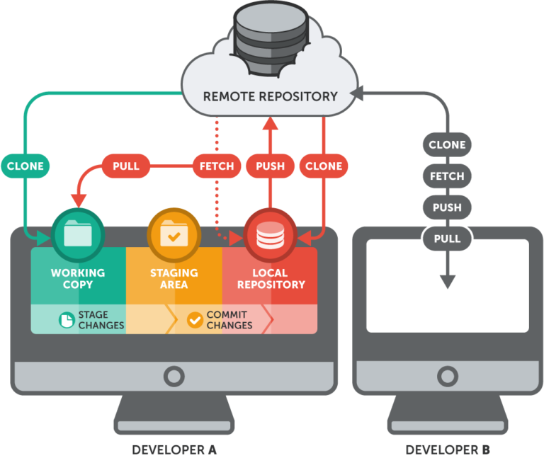
| Git | GitHub |
|---|---|
| Git is a software. | GitHub is a service. |
| Git is a command-line tool | GitHub is a graphical user interface |
| Git is installed locally on the system | GitHub is hosted on the web |
| Git is maintained by linux. | GitHub is maintained by Microsoft. |
| Git is focused on version control and code sharing. | GitHub is focused on centralized source code hosting. |
| Git is a version control system to manage source code history. |
GitHub is a hosting service for Git repositories. |
| Git was first released in 2005. |
GitHub was launched in 2008. |
| Git has no user management feature. |
GitHub has a built-in user management feature. |
| Git is open-source licensed. | GitHub includes a free-tier and pay-for-use tier. |
| Git has minimal external tool configuration. | GitHub has an active marketplace for tool integration. |
| Git provides a Desktop interface named Git Gui. | GitHub provides a Desktop interface named GitHub Desktop. |
| Git competes with CVS, Azure DevOps Server, Subversion, Mercurial, etc. | GitHub competes with GitLab, Bit Bucket, AWS Code Commit, etc. |
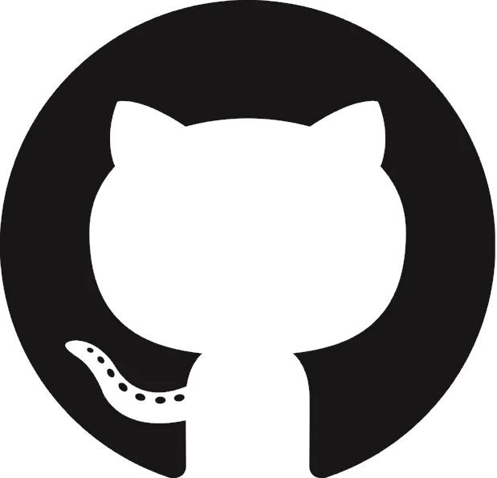
|
Github |
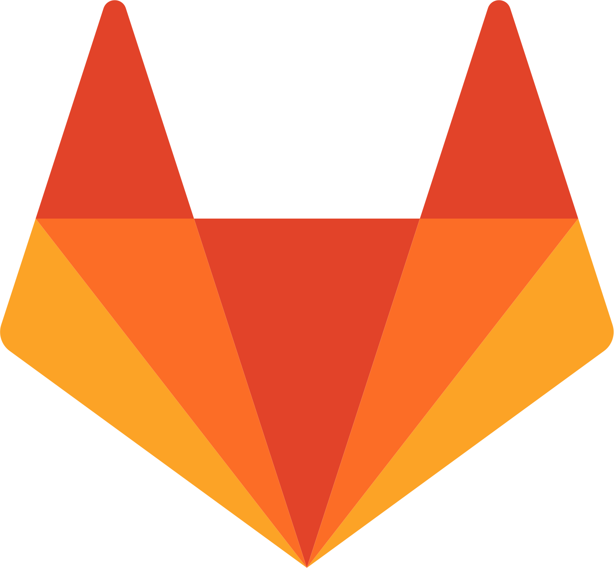 Gitlab |
||
|
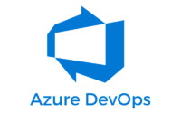 Azure DevOps |
Bitbucket |
Gitea |
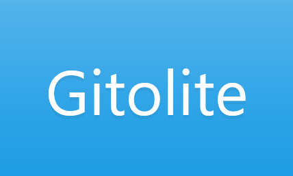 Gitolite |
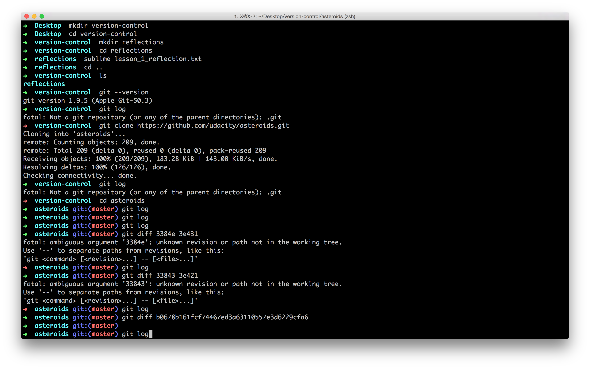
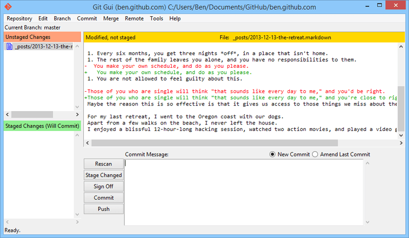
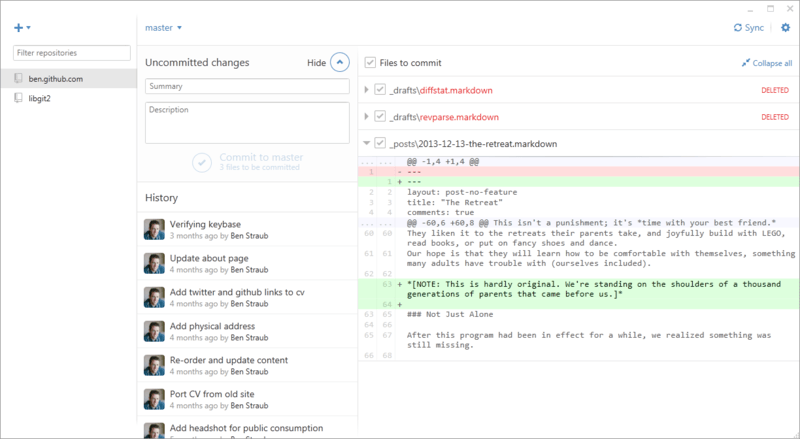
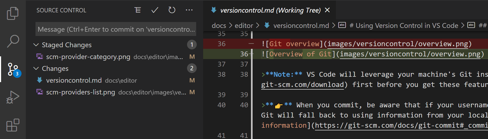
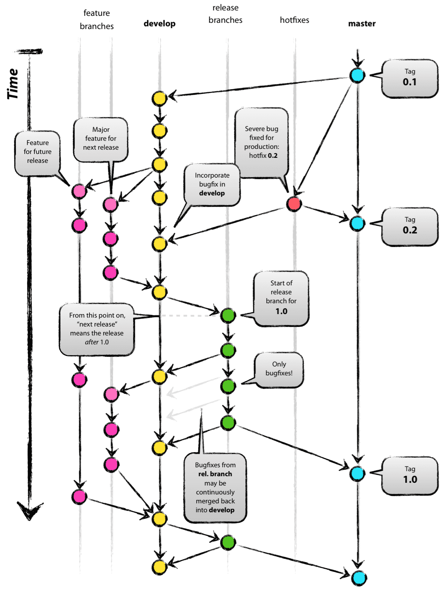
Der vorgestellte Workflow stellt die Stabilität des Main-Branches an die erste Stelle und nimmt dafür die erhöhte Komplexität von vielen Branches in Kauf. Außerdem ermöglicht es dieser Workflow, mehrere Versionen parallel zu verwalten.
Falls noch nicht geschehen, installiert bitte den Git-Client auf eurem Computer und konfiguriert eure E-Mail-Adresse:
winget install --id Git.Git -e --source winget
git config --global user.name "Timo Cirkel"
git config --global user.email "tcirkel@doerffler.com"
Sollte die Installation per winget für euch nicht in Frage kommen, könnt ihr den Installer hier herunterladen: Git - Downloads
Ihr arbeitet im Workshop mit folgendem Github-Repository:
doerffler/git-workshop-playground
Zum Zugriff benötigt ihr einen Github-Account. Den könnt ihr euch, wenn noch nicht vorhanden, hier anlegen:
Zur Github-Account-RegistrierungIhr arbeitet gemeinsam an einer Webseite. Diese besteht aus reinem HTML und gibt einen Überblick über die Kursteilnehmer.
Im Laufe des Workshops sollt ihr eine einfache Seite über euch selbst anlegen und sie der Kursteilnehmerübersicht auf der Hauptseite hinzufügen.
Zunächst klont ihr das Workshop-Repository auf euren Computer, um mit der Entwicklungsarbeit beginnen zu können.
git clone https://github.com/doerffler/git-workshop-playground.git
cd git-workshop-playground
Das Workshop-Repository ist nach dem Gitflow-Paradigma organisiert. Es gibt einen main und einen develop Zweig.
Legt bitte euren eigenen Feature-Zweig an:
git checkout develop
git checkout -b feature/TICI
Kopiert euch bitte die Datei TICI.html und legt sie unter eurem Kürzel ab. Ändert dann die Inhalte des HTML-Dokumentes (oder lasst es bleiben).
Fügt außerdem der Kursteilnehmerübersichtsseite (index.html) einen Link auf eure eigene Seite hinzu.
TICI.html
Ihr könnt euch alle Änderungen zwischen eurem Arbeitsbereich und dem lokalen Repository auflisten lassen.
git diff
Die neu ins Arbeitsverzeichnis aufgenommene Datei muss noch für die Versionierung indiziert / gestaged werden:
git add .
git status
Die neu angelegte Seite kann mit folgendem Befehl in die Versionshistorie aufgenommen werden:
git commit -m "Adds the page of TICI"
Die Änderungen sind nun in der Versionshistorie integriert und können ans Remote-Repository (Github) übertragen werden.
git push -u origin feature/TICI
Die -u Option muss nur beim ersten Push des Branches angegeben werden. Anschließend reicht ein einfaches git push.
Ab jetzt befinden sich eure Änderungen im Remote-Repository und ihr könnt auf die Github-Oberfläche wechseln.
Um unsere Änderungen in den develop-Zweig zu integrieren stellen wir einen Pull-Request (PR). Tragt als Reviewer bitte euren rechten Tischnachbarn ein.
Ihr werdet bei Github darüber informiert, sobald euch jemand als Reviewer für einen neuen PR einsetzt.
Schaut euch bitte den an euch gestellten PR an, prüft die Änderungen und bittet den Author, per Review-Comment, darum sein Lieblings-ETL-Tool auf der Seite zu nennen.
Sobald ihr als Author über den Review-Comment benachrichtigt werdet, macht bitte die entsprechende Änderung, committed diese und pusht sie. Der PR wird dann automatisch aktualisiert.
Nach erfolgter Änderung könnt ihr als PR-Reviewer den PR akkzeptieren.
Euer PR wird sich sehr wahrscheinlich aufgrund eines Merge-Konflikts an der index.html nicht nach develop mergen lassen.
Um diesen zu beheben, gibt es zwei Möglichkeiten:
Wir entscheiden uns hier für die Merge-Variante.
git checkout feature/TICI
git merge develop
Git wird euch darüber informieren, dass es beim Merge-Vorgang zu einem Fehler kam und euch darum bitten diesen Fehler manuell zu beheben.
Dazu markiert Git die fehlerhafte Stelle innerhalb der index.html
Natürlich sollen alle in der index.html erfolgten Einträge bestehen bleiben. Entfernt also die Konfliktmarkierungen und ändert das HTML so, dass anschließend alle Einträge zu den Teilnehmerseiten zu finden sind.
Dann könnt ihr die index.html für den nächsten Commit vorsehen, diesen durchführen und pushen.
git add index.html
git commit -m "Resolves merge conflict"
git push
Es sollte nun möglich sein den PR zu mergen. Tut dies bitte und löscht euren Feature-Zweig über Github.
Es gibt nun Änderungen im Remote-Repository, die ihr noch nicht in euer lokales Repository übernommen habt. Prüft bitte zunächst ob wirklich neue Änderungen vorliegen:
git fetch --prune
git checkout develop
git status
git branch -d feature/TICI
Die Änderungen könnt ihr euch dann vom Remote-Repository pullen.
git pull
Automatisierungsprozess für Entwicklungsteams, der ein häufigeres Zusammenführen von Codeänderungen zu einem gemeinsamen Codezweig oder „Trunk“ ermöglicht. Im Zuge dieser Updates werden automatisierte Testschritte angestoßen, die für die Zuverlässigkeit der zusammengeführten Codeänderungen sorgen.
(...)
Bei einer erfolgreichen CI werden die von Entwicklungsteams vorgenommenen Codeänderungen nach der Zusammenführung validiert, indem die Anwendung automatisch entwickelt und verschiedene Stufen automatisierter Tests - in der Regel Unit- und Integrationstests - durchgeführt werden. So wird sichergestellt, dass die Anwendung nach den Änderungen weiterhin funktioniert. Wenn bei den automatisierten Tests ein Konflikt zwischen neuem und bestehendem Code entdeckt wird, lassen sich diese Fehler dank CI einfach und regelmäßig beheben.
Bei einer Continuous Integration werden regelmäßig neue Codeänderungen für Apps entwickelt, getestet und in einem gemeinsamen Repository zusammengeführt. Damit soll der Konflikt verhindert werden, den zu viele Branches einer App verursachen können, wenn sie zeitgleich entwickelt werden.
Das „CD“ in CI/CD kann für Continuous Deployment oder Continuous Delivery stehen. Dies sind Methoden zur Automatisierung weiterer Stufen in der Pipeline.
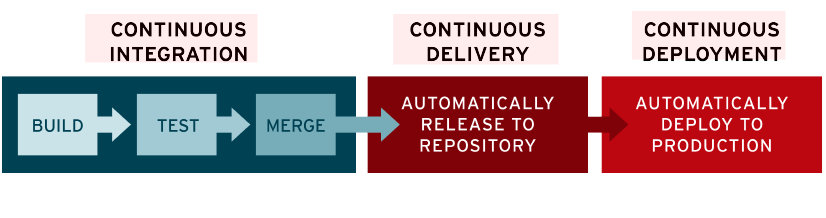
CI/CD wird nicht mithilfe von Git implementiert, sondern in der Regel durch die Code-Hosting-Plattformen.
Diese bringen Funktionalitäten mit, um auf neu hinzugefügten Code zu reagieren.
So können Webseiten hochgeladen, Dockercontainer gebaut und Unit-Tests gestartet und ausgewertet werden.
git log -S password
Am Einfachsten/Sichersten mit dem Python-Script filter-repo
git filter-repo --path .env --invert-paths
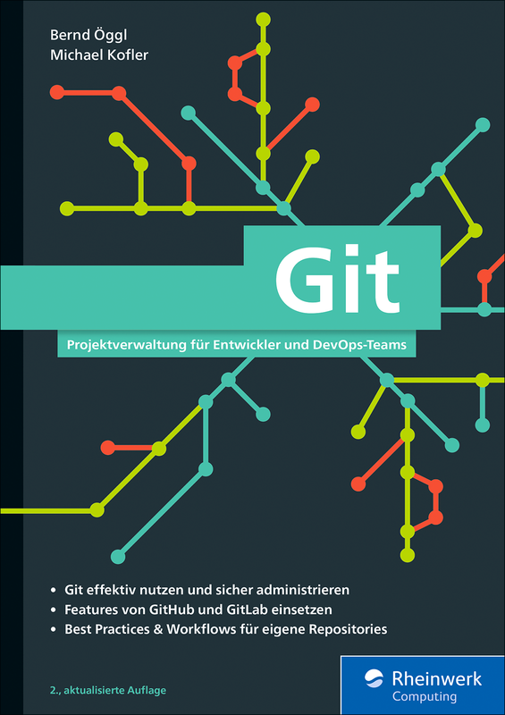
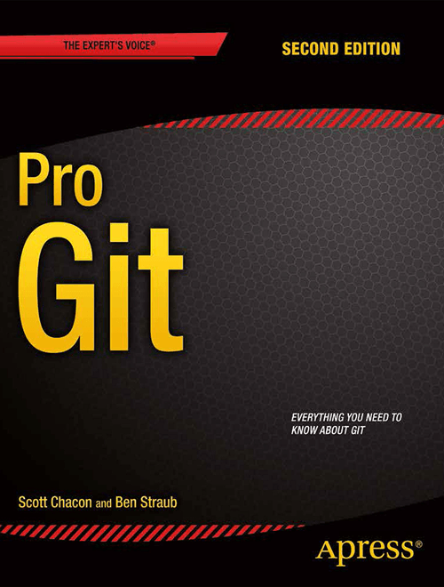
Um das Branching in Git zu üben empfiehlt sich folgende Demo: